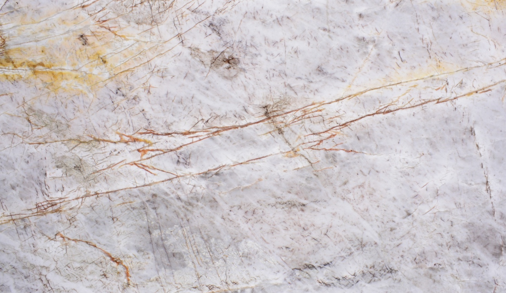
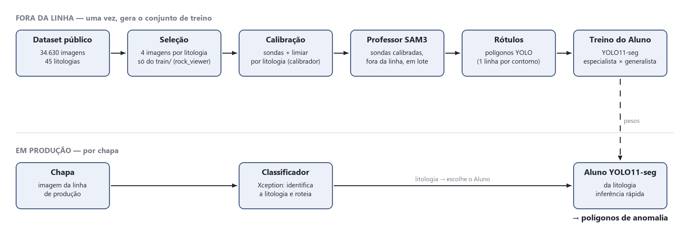
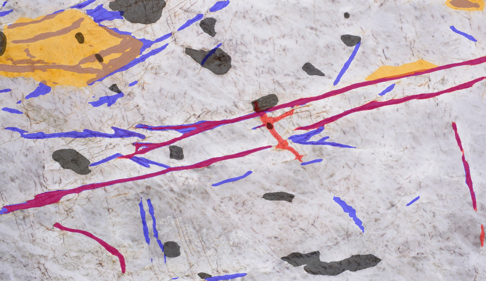
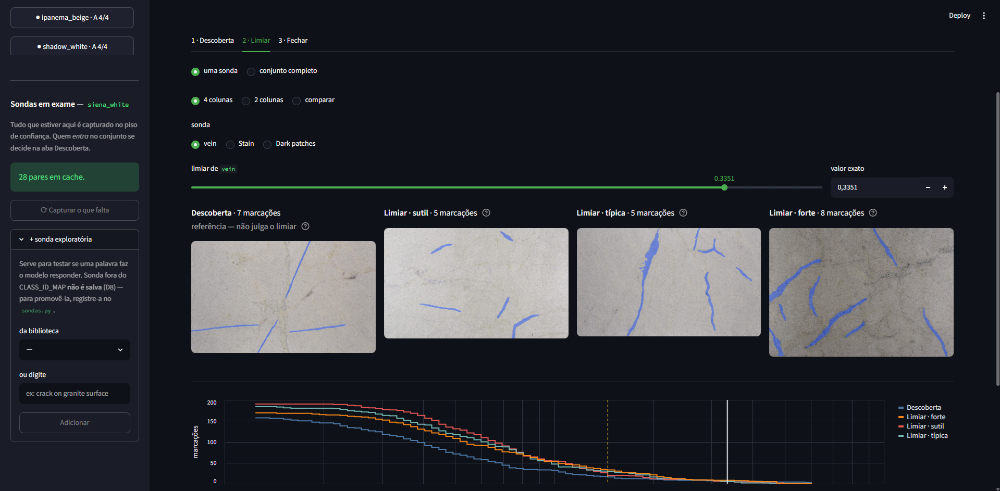
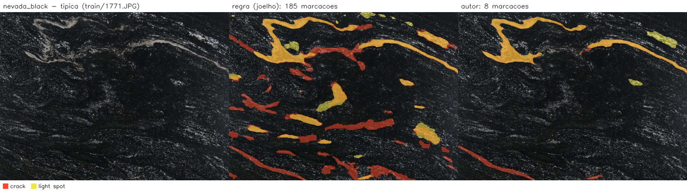
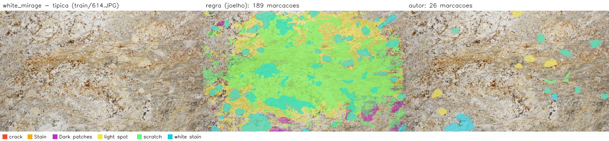
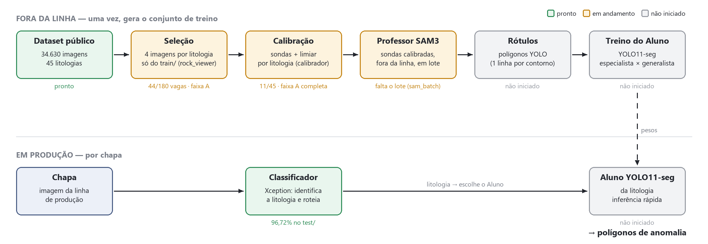

Pipeline Hierárquico de Visão Computacional com abordagem Teacher‑Student para Marcação Automatizada de Anomalias por Pseudo‑Rotulagem em Chapas de Rochas Ornamentais com Critério Parametrizado por Litologia
Henrique Machado de Oliveira
Orientador: Prof. Dr. Rafael Silva Guimarães
Bacharelado em Sistemas de Informação · Ifes Cachoeiro de Itapemirim
O contexto
Toda chapa de rocha tem marcas. Algumas são desenho da pedra, outras são defeito

chapa polida · ice_leke
O bloco de rocha sai da pedreira, é serrado em chapas e polido. O Espírito Santo é o maior polo produtor e exportador do país.
Antes da venda, alguém olha a chapa e marca o que considera defeito: trincas, manchas, riscos.
Mas veios e manchas também fazem parte do desenho natural da pedra.
O problema
O que é defeito depende de quem olha
A linha entre desenho e defeito muda com a rocha, o cliente, o lote e o inspetor. O critério fica na cabeça de cada pessoa e não está escrito em lugar nenhum.
O caminho comum para automatizar é desenhar os defeitos à mão em muitas imagens e treinar um modelo com elas.
Um trabalho anterior aqui no Ifes fez isso (FracStoneAI): 1.088 imagens desenhadas à mão, com o mesmo conjunto de imagens que o ARIA usa.
0,04–0,21
acerto do contorno dos defeitos, numa escala de 0 a 1 (mAP). Os próprios autores apontam que a anotação à mão saiu ruidosa e deixou defeitos de fora.
A proposta do ARIA: gerar essas marcações sem desenhar à mão, com um critério escrito, que qualquer pessoa possa conferir e repetir.
A proposta
Um modelo grande ensina um modelo pequeno
Professor · SAM3. Modelo grande, já treinado em muitas imagens, que acha objetos a partir de uma palavra. Lento: roda uma vez só, para gerar os exemplos.
Aluno · YOLO11-seg. Modelo pequeno e rápido, que aprende com os exemplos do Professor. É ele que roda na linha de produção.
Classificador · Xception. Antes de tudo, reconhece qual é a rocha, para chamar o Aluno certo.

A pergunta do ARIA: marcar defeitos com um critério ajustado para cada rocha dá resultado melhor do que usar um critério único para todas?
Os dados
Um conjunto público de fotos de chapas, com muito mais de umas rochas que de outras
34.630
fotos de chapas polidas, públicas no Kaggle
45
tipos de rocha (litologias), de 106 a 4.588 fotos cada
4
faixas por quantidade de fotos: A, B, C e D
As fotos são separadas de antemão: 70% para treinar, 15% para ajustar e 15% guardadas para a prova final.
A diferença de volume vira pergunta: com quantas fotos vale a pena ter um modelo só para aquela rocha?
O trabalho anda da faixa com mais fotos para a com menos. Hoje: faixa A, as 11 rochas com mais de mil fotos.
Como o SAM3 procura
O Professor procura por palavras: cada palavra é uma sonda

uma cor por sonda · ice_leke
Pedimos ao SAM3, em inglês: "ache crack", "ache stain"… São 7 palavras ao todo.
Cada coisa encontrada vem com uma nota de confiança, de 0 a 1.
O limiar é a nota mínima para virar marcação. Baixo demais, marca a pedra inteira; alto demais, não marca nada.
E o limiar certo muda de rocha para rocha.
O protocolo de calibração
Para cada rocha: quatro fotos, um limiar por sonda e o motivo escrito

ferramenta de calibração · um controle, quatro prévias, a curva
Escolho à mão 4 fotos da rocha: uma com muitos tipos de marca, que decide quais sondas usar, e três com defeito sutil, típico e forte.
Uma regra automática sugere um limiar: o ponto em que a quantidade de marcações para de despencar.
Eu, como autor, posso discordar da regra, mas preciso escrever por quê.
As fotos da prova final não são usadas aqui.
Tudo vai para um arquivo por rocha: quais sondas, qual limiar e por quê. Esse arquivo é o critério, e qualquer um pode conferir.
Primeiro resultado · faixa A calibrada
Em todos os casos, o autor foi mais exigente que a regra automática
45 / 45
pares rocha × sonda em que o autor pediu nota mínima maior que a da regra, nas 11 rochas da faixa A
3,3×
em geral, o limiar do autor ficou 3,3 vezes o da regra (de 1,1× a 17,9×)
nevada_black
7,9×
santa_cecilia
4,8×
ipanema_beige
4,6×
ubatuba_green
4,2×
white_mirage
3,4×
golden_storm
3,3×
white_olympus
3,1×
itaunas_white
2,9×
san_francisco_green
2,8×
siena_white
1,9×
shadow_white
1,7×
autor ÷ regra, mediana por rocha · traço = 1× (igual à regra) padrão uniformemovimentada
Na chapa
Mesma chapa, mesmas palavras: só o limiar muda

Isto mostra a diferença, não quem está certo. Nas fotos de defeito típico e forte, a regra marca de 7 a 228 coisas por chapa; o autor, de 0 a 46. Quem decide qual acerta é a comparação com marcações feitas à mão (próximos passos).
O que a calibração está sugerindo
Nas rochas mais movimentadas, as palavras parecem não dar conta

Movimentada: rocha com tanto desenho que até uma pessoa tem dificuldade de separar o defeito.
Em 3 das 4 movimentadas (e em mais uma), o motivo escrito diz: "parece faltar alguma palavra".
Ainda é hipótese: a natureza cria mais formas do que algumas palavras conseguem nomear, e isso piora quanto mais variada a rocha. O Experimento 1 vai medir.
Etapa 1 · reconhecer a rocha
Refazer o classificador mostrou que o resultado depende de como se separam as fotos
Outro trabalho anterior do Ifes (DeepStoneAI) usou o modelo Xception para reconhecer as 45 rochas, com 99,21% de acerto. Ele não guardou o modelo treinado, então o ARIA o refez com a mesma receita.
Como as fotos foram separadas
Acerto na prova
O que cai na prova
Sorteadas uma a uma (como no DeepStoneAI)
99,92%
chapas vizinhas das de treino, do mesmo bloco
Separação oficial do conjunto
96,72%
em algumas rochas, um bloco que o modelo nunca viu
Chapas cortadas do mesmo bloco são quase gêmeas, com os mesmos veios. Os dois números valem: um para bloco já visto, outro para bloco novo.
Onde o projeto está
As 11 rochas com mais fotos já estão calibradas

44 / 180
fotos de calibração escolhidas (4 por rocha)
11 / 45
rochas calibradas: a faixa A inteira
Próximos passos
Até aqui, sabemos o que muda. Falta saber o que acerta
Gabarito: ~50 fotos da prova final, marcadas à mão antes de o SAM3 olhar para elas.
Experimento 1: SAM3 sem ajuste × regra automática × ajuste do autor. Qual chega mais perto do gabarito?
Experimento 2: um Aluno por rocha × um Aluno para todas, faixa por faixa.
Gerar as marcações de todas as fotos e treinar os Alunos.
Ligar o classificador ao Aluno de cada rocha.
Teste cego com alguém do setor: duas marcações lado a lado, sem saber de onde veio cada uma.
Obrigado
Perguntas?
O critério do que é defeito sai da cabeça de quem olha e vira um arquivo, que qualquer um pode conferir, comparar e repetir.
Henrique Machado de Oliveira · Ifes Cachoeiro de Itapemirim
Uma vez por (foto, sonda), com nota mínima 0,001; guarda notas e polígonos
Limiar
Um por (rocha, sonda): 45 pares na faixa A, de 0,027 a 0,70
Saída
Cada contorno solto vira um polígono no formato YOLO. No treino do Aluno, tudo vira uma classe só: anomalia
32 / 32
comparações idênticas entre filtrar a captura e rodar o SAM3 de novo (4 sondas × 8 limiares)
A nota mínima só descarta o que o modelo já produziu. Por isso dá para rodar uma vez e testar qualquer limiar depois, sem GPU.
Mais usadas na faixa A: crack e Dark patches (9 de 11 rochas). vein: só 3.
Apoio A2 · Classificador
Configuração do Xception
Base
Xception pré-treinado no ImageNet (timmlegacy_xception.tf_in1k)
Entrada
480 × 480, valores em [−1, 1]
Cabeça
Dropout 0,5 + camada densa com 45 saídas (uma por rocha)
Fase 1
Base congelada · 15 épocas · taxa de aprendizado 1e-4
Fase 2
Últimas 50 camadas liberadas (12,2 milhões de parâmetros) · 10 épocas · 1e-5
Otimização
Adam · lote 32 · bf16 · taxa ×0,5 após 3 épocas sem melhora · para após 5
Aumento
Espelhamento, rotação, zoom e contraste · sem peso por classe
Divisão
Oficial do conjunto: 24.263 treino · 5.214 ajuste · 5.153 prova
96,72%
acerto na prova (divisão oficial), avaliada uma única vez
92,3%
acerto médio por rocha · F1 macro 0,924 · 15 de 45 rochas com algum erro
Os erros caem em pares parecidos: naica→quartzito_thannos, siena_white→white_ceara, nevada_black→sao_gabriel_black (na validação).
Apoio A3 · Classificador
O Xception do ARIA refaz a receita do DeepStoneAI, com quatro mudanças na receita
DeepStoneAI
ARIA
Ferramenta
Keras / TensorFlow
PyTorch + timm (o TensorFlow não usa GPU no Windows nas versões recentes)
Divisão
Treino, ajuste e prova fundidos e sorteados de novo; ajuste e prova se sobrepõem
Divisão oficial 70/15/15; a prova é vista uma vez só
Resolução
Carrega em 480 e amplia para 1080
480 × 480, sem ampliar
Escala
[0, 1], fora da escala que os pesos do ImageNet esperam
[−1, 1], a escala dos pesos
Modelo salvo
Não (só os notebooks)
Sim, com configuração e métricas no git
Acerto
99,21%
96,72% na divisão oficial · 99,92% sorteando como o DeepStoneAI
Igual: pesos do ImageNet, as duas fases (15 épocas congelada a 1e-4; últimas 50 camadas a 1e-5), o mesmo aumento de dados, as mesmas 34.630 fotos. As 50 camadas foram conferidas por contagem: 12.168.304 parâmetros treináveis, igual ao Keras. Com o sorteio, a receita passa dos 99,21%; a queda para 96,72% vem da divisão, não da resolução.
Apoio A4 · Segmentação
O ARIA não troca o YOLO pelo SAM3. Troca quem desenha os exemplos
FracStoneAI
ARIA
Quem marca
Pessoas, polígono a polígono
SAM3, com sondas e limiar escritos por rocha
Fotos marcadas
1.088, de 4 rochas
As fotos de treino das 45 rochas, faixa por faixa (planejado)
Classes
4: fraturamento, irregularidade, mancha, oxidação
1: anomalia. As sondas acham regiões, não afirmam o tipo
Critério
Na cabeça de quem anotou
Escrito em arquivo, por rocha
Quem aprende
YOLO11-seg, com os polígonos feitos à mão
YOLO11-seg (Aluno), com os polígonos do SAM3. O SAM3 não é treinado
Na produção
YOLO11-seg
YOLO11-seg: o mesmo modelo
Resultado
Contorno (mask mAP50-95): 0,04 a 0,21
Ainda não medido (Experimentos 1 e 2)
O FracStoneAI aponta duas causas para os números baixos: anotação ruidosa, com defeitos de fora, e defeitos pequenos demais (em 640 px, 73% das marcações tinham menos de 32 px). O ARIA ataca a primeira; a segunda é um cuidado que o Aluno herda.
Apoio A5 · Calibração
A regra escolhe o ponto de maior curvatura da curva
nevada_black · crack · 3 fotos de limiar somadas · dados reais do cache
Para cada sonda, somo as 3 fotos de limiar numa curva: limiar × nº de marcações.
Limiar em escala log; o ponto escolhido é o mais distante da reta que liga as pontas (método Kneedle).
Sem parâmetro livre e igual para as 45 rochas. A foto de descoberta fica de fora: puxaria o limiar para cima.
Aqui a regra parou em 0,018 (511 marcações); o autor, em 0,240 (14).
A forma da regra foi fechada em 26/09, antes de calibrar a faixa A. A alternativa, anotar 3 fotos por rocha (135 imagens), foi descartada por custo.
Apoio A6 · Avaliação
Experimento 1: quatro configurações do SAM3, cada uma mudando uma coisa
Braço
Sondas
Limiar
Comparado ao anterior, mede
Padrão
Todas
Regra sobre as 45 rochas reunidas
—
Regra, todas
Todas
Regra sobre aquela rocha
Calibrar por rocha: o teste da hipótese
Regra, do autor
As da foto de descoberta
Regra sobre aquela rocha
O que a escolha de sondas custa e o que ela compra
Autor
As da foto de descoberta
Limiar escolhido pelo autor
O ajuste humano do limiar
Gabarito: ~50 fotos da prova, marcadas à mão antes de o SAM3 rodar nelas.
Os quatro braços saem da mesma captura: uma rodada do SAM3 por foto, sem nenhuma anotação extra.
O padrão usa a mesma regra, não a média dos limiares calibrados. A média perderia por construção, e o teste não seria justo.
Apoio A7 · Limitações
O que o trabalho declara como limite
O gabarito é do autor. Marcado antes de o SAM3 olhar as fotos, mas depois de meses olhando o SAM3: a independência é parcial.
Sondas saem de uma chapa só. Um defeito de outra parte do bloco pode ficar sem sonda. O braço "Regra, todas" mede isso.
Calibração só com fotos de treino. Em algumas rochas, a prova vem de outro bloco.
"Movimentada" é percepção do autor, ainda sem confirmação de especialista.
Teste cego com o setor depende de um contato ainda em aberto.
Erro do classificador (3,3% em bloco novo) manda a chapa para o Aluno errado. Ainda não medido de ponta a ponta.
Cada faixa é uma entrega fechada: as que não couberem no prazo viram trabalho futuro.